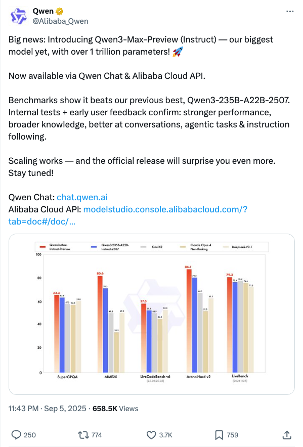

Alibaba_Qwen_发布万亿参数Qwen3-Max-Preview模型
发布时间: 2025-09-05T15:43:58.000Z 阿里云通义千问团队宣布推出其迄今为止最大的模型Qwen3-Max-Preview (Instruct)，该模型拥有超过1万亿参数。新模型已通过通义千问聊天和阿里云API开放，基准测试显示其性能超越前代Qwen3-235B，在对话、智能体任务和指令遵循方面表现更强，知识更广，预示着未来正式版将带来更大惊喜。
2025-09-05
阿里云通义千问团队宣布推出其迄今为止最大的模型Qwen3-Max-Preview (Instruct)，该模型拥有超过1万亿参数。新模型已通过通义千问聊天和阿里云API开放，基准测试显示其性能超越前代Qwen3-235B，在对话、智能体任务和指令遵循方面表现更强，知识更广，预示着未来正式版将带来更大惊喜。
Kimi.ai发布Kimi K2-0905模型更新，显著增强了其编码能力，尤其是在前端开发和工具调用方面表现突出。此次更新还将上下文长度扩展至256k tokens，并改进了与Claude Code、Roo Code等多种智能体框架的集成。新模型权重和代码已在Hugging Face开源，用户可在kimi.com体验新版Kimi K2，或通过turbo API获取高精度工具调用服务。
知名AI专家Andrej Karpathy发文祝贺OpenAI在GPT-5 Pro上的进展，并分享了其在解决复杂编程难题方面的卓越体验。他指出，在多次尝试使用其他工具（CC）未能有效解决问题后，GPT-5 Pro仅用10分钟便生成了可直接运行的代码，显著提升了开发效率和问题解决能力，展现了其在高级代码生成和复杂逻辑处理上的强大实力。

微软近期发布了名为rStar2-Agent的14B数学推理模型，该模型通过智能体强化学习（agentic RL）进行训练。令人瞩目的是，rStar2-Agent仅经过510步的强化学习训练，便在数学推理能力上达到了前沿水平，展现了高效训练大型模型以实现卓越性能的潜力。这一研究成果对AI领域的数学问题解决和强化学习应用具有重要意义。
Meta公司推出名为Set Block Decoding (SBD)的新型推理加速器，专为大型语言模型（LLMs）设计。SBD通过并行采样多个未来token，可将前向传播次数减少3至5倍，且无需改变现有模型架构，同时保持与KV缓存的兼容性，并能匹配NTP训练性能。这项技术有望显著提升LLM的推理效率。
LlamaIndex发布其命令行工具包SemTools，旨在通过CLI智能体提升文档搜索与分析能力。该工具将Unix命令行工具与语义搜索相结合，经测试在处理1000篇arXiv论文时，展现出强大的知识工作潜力。SemTools为智能体提供解析和语义搜索命令，实现复杂文档的模糊语义关键词搜索，有效替代自定义RAG基础设施，大幅提升文档处理效率和准确性。
知情人士透露，DeepSeek正秘密研发具备自我进化能力的智能体模型，预计代号“R2”的版本将于年末发布。此前，DeepSeek-V3.1已显著提升了其在工具使用和智能体任务中的表现，尤其在编程和搜索智能体测评中展现出全面性能提升。新模型旨在通过少量提示执行复杂操作并从历史行为中学习。此举标志着DeepSeek在AI Agent领域迈出重要一步，有望引领行业新趋势，并可能降低智能体技术的使用门槛，预示着大模型领域在2025年将持续聚焦智能体发展。
快手Keye-VL-1.5模型通过创新的慢-快双轨视频编码策略和渐进式四阶段预训练方法，有效解决了视频理解中空间分辨率与时间覆盖范围的平衡难题。该模型将上下文长度扩展至128K词元，并结合面向推理与人类偏好的后训练流程，显著提升了复杂视频理解与推理能力。Keye-VL-1.5在公开基准测试中表现卓越，尤其在视频理解任务上取得突破，同时在通用多模态基准测试中保持竞争力，为下一代多模态模型发展提供了实用解决方案。
斯坦福大学最新研究解决了强化学习（RL）在机器学习工程（MLE）任务中的两大挑战：可变动作执行时间导致的学习偏差和稀疏奖励信号。通过引入“感知时长梯度更新”和“环境检测”机制，研究团队显著提升了RL训练效率。实验表明，仅30亿参数的Qwen2.5-3B模型，在RL训练后，其在12项Kaggle MLE任务中的8项表现超越了依赖提示的Claude3.5-Sonnet，平均性能提升22%，并在多数任务中优于GPT-4o。这强调了持续学习和迭代优化在复杂AI任务中超越静态大模型潜力的重要性，为AI Agent开发提供了新思路。
牛津大学团队提出VMem（Surfel-Indexed View Memory），旨在解决长视频生成中一致性差和计算成本高的问题。VMem通过将“看过什么”写入几何小片surfel中，并以几何可见性为依据检索最相关的历史视图作为上下文，而非仅依赖最近帧。该方法显著提升了长序列视频生成的一致性，尤其在回环轨迹测试中表现优异，同时大幅降低了算力消耗，实现了高达12倍的推理速度提升。VMem作为一种显式、可解释的外部记忆机制，为长视频生成提供了高效且稳定的解决方案，可即插即用集成到现有骨干网络。
英伟达近期收购了AI编程初创公司Solver，该公司专注于开发能够管理整个代码库的AI Agent，而非仅限于代码补全。此举是英伟达构建其AI硬件软件生态系统战略的重要一环，旨在降低芯片使用成本并深化其在AI软件市场的布局。Solver的技术预示着AI协作者将更深入参与软件开发核心环节。此次收购不仅能缩短基于英伟达平台的开发周期，也标志着英伟达“AI收购狂潮”的延续，拓展其从芯片到AI智能体的业务版图。
北京大学与BeingBeyond团队联合研发的BumbleBee系统，通过创新的“分治-精炼-融合”三级架构，首次突破传统人形机器人控制中专家策略依赖和泛化性差的“专家困境”。该系统在单一控制框架内实现了从专家策略优化到通用全身控制的跨越，使宇树G1等机器人能自如掌握跳舞、侧手翻等多样化动作。仿真和真实平台测试均显示，BumbleBee在任务成功率和稳定性上显著优于现有方法，为通用具身智能控制提供了高效且可泛化的新范式。

Parlant是一个创新的AI智能体框架，旨在解决大型语言模型（LLM）在遵循指令和保持行为一致性方面的挑战。它通过引入行为指南、工具集成、领域适应和可解释性等核心功能，确保AI智能体能够可靠地执行预设任务并提供可预测的响应。该框架适用于金融服务、医疗保健、电子商务和法律科技等多个行业，帮助开发者构建生产级、符合业务需求的客户交互型AI智能体。
Live Agent Studio是由oTTomator开发的社区驱动平台，旨在提供前沿AI智能体的探索与实现。该平台所有智能体均开源，其GitHub仓库包含所有智能体的源代码和工作流JSON。平台致力于成为AI智能体技术、研究及工具的中心，用户可通过购买代币使用智能体，并获得免费初始代币。它不仅提供实用价值，也作为学习AI应用和构建智能体的教育平台，促进社区共同学习与发展。

Kilo Code是一个开源的VS Code AI智能体，旨在通过自然语言生成代码、自动化任务和代码重构，提升开发效率。它集成了最新的AI模型如Gemini 2.5 Pro、Claude 4和GPT-5，并支持可选的API密钥。该项目融合了Roo Code和Cline等开源项目的特性，提供多模式工作流（如Architect、Coder、Debugger），并具备MCP服务器市场以扩展功能。Kilo Code致力于为开发者提供一个适应性强、功能丰富的AI编码助手，简化开发流程。

bitnet.cpp是微软官方推出的1比特大语言模型（如BitNet b1.58）推理框架。它提供了一套优化的内核，支持在CPU和GPU上对1.58比特模型进行快速、无损推理。该框架在ARM CPU上实现1.37x至5.07x的加速，x86 CPU上实现2.37x至6.17x的加速，并显著降低能耗。bitnet.cpp能够在一台CPU上运行100B的BitNet b1.58模型，达到接近人类阅读的速度，极大地提升了LLM在本地设备上运行的潜力，是边缘AI推理的重要进展。

Pathway AI Pipelines提供了一套高效的AI应用部署方案，专注于大规模、高精度RAG和企业级AI搜索。它利用最新知识，提供即用型大语言模型应用模板，支持与文件系统、Google Drive、Sharepoint、S3、Kafka等多种数据源的实时连接与同步。该方案内置数据索引功能，支持向量、混合及全文搜索，无需额外基础设施，简化了AI应用开发与部署流程，尤其适用于处理海量文档并保持知识更新。
XLeRobot是一个开源、低成本的具身智能机器人项目，旨在普及具身AI技术。该项目提供了一款成本低于iPhone、组装时间少于4小时的双臂移动机器人设计，起售价约660美元。它基于LeRobot等现有项目构建，支持键盘、Xbox手柄、Switch Joy-Con等多种控制方式，并提供详细的文档、仿真环境及硬件组装指南，可用于家庭任务和机器人研究。

我们引入了Delta激活，这是一种通过测量微调模型相对于基础模型的内部激活变化来将其表示为向量嵌入的方法。这种表示允许按领域和任务进行有效聚类，揭示了模型格局中的结构。Delta激活还展示了理想的特性：它在不同的微调设置中表现出鲁棒性，并且在混合微调数据集时呈现出可加性。此外，我们展示了Delta激活可以通过少样本微调来嵌入任务，并进一步探讨了其在模型选择和合并中的应用。我们希望Delta激活能够促进公共可用模型的重用实践。代码可在https://github.com/OscarXZQ/delta_activations获取。

我们提出了Durian，这是首个以零样本方式，将给定参考图像中的面部属性迁移到目标人像，从而生成人像动画视频的方法。为了实现跨帧的高保真和空间一致的属性迁移，我们引入了双参考网络，该网络将人像和属性图像的空间特征注入到扩散模型的去噪过程中。我们使用自重建公式训练模型，其中从同一人像视频中采样两帧：一帧作为属性参考，另一帧作为目标人像，其余帧则根据这些输入及其对应的掩码进行重建。为了支持不同空间范围属性的迁移，我们提出了一种使用关键点条件图像生成进行训练的掩码扩展策略。此外，我们通过空间和外观级别的变换进一步增强属性和人像图像，以提高对它们之间位置错位的鲁棒性。尽管在训练时没有明确的三元组监督，但这些策略使模型能够有效地泛化到各种属性和野外参考组合。Durian在带属性迁移的人像动画方面取得了最先进的性能，值得注意的是，其双参考设计使得在单次生成过程中无需额外训练即可实现多属性组合。

现代语言模型后训练存在两种主要的数据来源：在线（模型生成的轨迹）数据和离线（人类或其他模型演示）数据。这两种数据类型通常分别由强化学习（RL）和监督微调（SFT）等方法使用。在本文中，我们表明这些方法并非相互矛盾，而是单一优化过程的实例。我们推导出了一个统一策略梯度估计器，并将广泛的后训练方法的计算表示为在不同数据分布假设和各种偏差-方差权衡下，一个共同目标的梯度。该梯度估计器由四个可互换的部分构成：稳定化掩码、参考策略分母、优势估计和似然梯度。受我们的理论发现启发，我们提出了一种混合后训练（HPT）算法，该算法动态选择不同的训练信号。HPT旨在有效利用演示并进行稳定探索，同时不牺牲已学习的推理模式。我们提供了大量的实验和消融研究，以验证我们统一理论框架和HPT的有效性。在六个数学推理基准和两个分布外测试集上，HPT在不同规模和系列的模型上始终超越了强大的基线。

基于流的三维生成模型在推理过程中通常需要数十个采样步骤。尽管少步蒸馏方法，特别是协同模型（CMs），在加速二维扩散模型方面取得了显著进展，但它们在更复杂的三维生成任务中仍未得到充分探索。在本研究中，我们提出了一种新颖的框架MDT-dist，用于少步三维流蒸馏。我们的方法建立在一个主要目标之上：蒸馏预训练模型以学习边际数据传输。直接学习此目标需要积分速度场，而此积分难以实现。因此，我们提出了两个可优化的目标：速度匹配（VM）和速度蒸馏（VD），分别将优化目标从传输层面等效转换为速度层面和分布层面。速度匹配（VM）学习稳定地匹配学生模型和教师模型之间的速度场，但不可避免地提供有偏的梯度估计。速度蒸馏（VD）通过利用学习到的速度场进行概率密度蒸馏，进一步增强了优化过程。在先驱三维生成框架TRELLIS上进行评估时，我们的方法将每个流变换器的采样步骤从25步减少到1或2步，在A800上实现了0.68秒（1步x2）和0.94秒（2步x2）的延迟，分别带来了9.0倍和6.5倍的加速，同时保持了高视觉和几何保真度。大量实验表明，我们的方法显著优于现有的CM蒸馏方法，并使TRELLIS在少步三维生成中实现了卓越的性能。

大型语言模型（LLMs）的最新进展表明，通过可验证奖励强化学习（RLVR），其推理能力可以得到显著提升，尤其是在数学和编程等领域，这些领域的真实正确性可以自动评估。然而，由于高质量、可验证数据集的稀缺以及人工监督的高成本，将这种成功扩展到其他推理密集型领域仍然充满挑战。在这项工作中，我们介绍了Loong项目：一个用于在各种推理密集型领域中进行可扩展合成数据生成和验证的开源框架。该框架包含两个关键组件：(1) LoongBench，一个精选的种子数据集，包含12个领域（例如，高等数学、化学、逻辑）的8,729个人工验证示例，每个示例都配有可执行代码和丰富的元数据；(2) LoongEnv，一个模块化合成数据生成环境，支持多种提示策略以生成新的问题-答案-代码三元组。这些组件共同形成了一个智能体-环境循环，从而实现了强化学习，其中基于LLM的智能体因生成与代码执行答案一致的链式思考（CoT）解决方案而获得奖励。通过实证，我们使用LoongBench对广泛的开源和专有LLM套件进行了基准测试，以评估领域覆盖范围并揭示性能瓶颈。此外，我们对LoongEnv生成的合成数据进行了全面分析，检查了其正确性、难度和多样性。代码和文档可在https://github.com/camel-ai/loong获取。

深度研究智能体因其在协调多阶段研究工作流（涵盖文献综合、方法设计和实证验证）方面的潜力而受到日益增长的关注。尽管取得了这些进展，但由于难以收集真正吸引研究人员注意力和求知欲的前沿研究问题，忠实地评估其研究能力仍然相当具有挑战性。为了弥补这一空白，我们引入了DeepResearch Arena，这是一个基于学术研讨会的基准，它捕捉了丰富的专家讨论和互动，更好地反映了真实世界的研究环境，并降低了数据泄露的风险。为了自动构建DeepResearch Arena，我们提出了一种多智能体分层任务生成（MAHTG）系统，该系统从研讨会记录中提取具有研究价值的灵感。MAHTG系统进一步将这些具有研究价值的灵感转化为高质量的研究任务，确保研究任务制定的可追溯性，同时过滤掉噪声。通过MAHTG系统，我们从200多个学术研讨会中整理了DeepResearch Arena，其中包含超过10,000个高质量研究任务，涵盖文学、历史和科学等12个学科。我们广泛的评估表明，DeepResearch Arena对当前最先进的智能体提出了巨大的挑战，不同模型之间存在明显的性能差距。